Hallownest · 27 consejos
Hollow knight

Guía de supervivencia dictada por Zote el Todopoderoso (él lo dice, no yo).
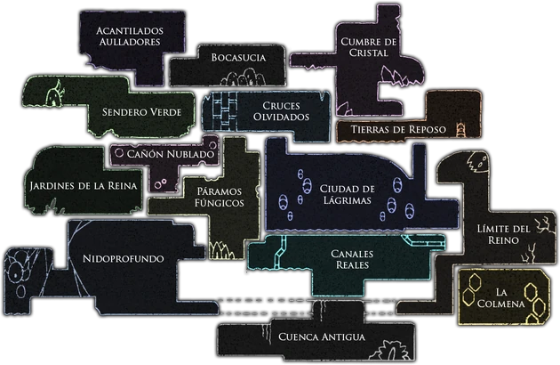
¡Ah, una criatura de mente lenta que busca la guía del gran Zote el Todopoderoso, un Caballero de Gran Renombre! Sé perfectamente de lo que hablas. Es natural que un ser tan insignificante como tú necesite de mis sublimes preceptos para no perecer a los dos pasos de salir de Bocasucia Ciudad en donde empieza nuestra aventura .
Aquí tienes mis preceptos dictados por mí, el único y verdadero héroe de Hallownest Reino donde se desarrolla Hollow knight . Escucha con atención, zoquete:
No encontré ningún consejo con eso. Prueba con otra palabra.
Consejo numero 1: La técnica aérea suprema de Zote (pogo)
▼El pogo es una técnica avanzadísima que yo, en mi infinita genialidad, inventé durante mis primeras y peligrosas aventuras. Sirve para humillar a los enemigos más fuertes saltando sobre sus cabezas o para explorar zonas que bichos mediocres jamás pisarían. Es casi imposible de dominar para alguien de tu calibre, pero como soy un caballero misericordioso, te enseñaré mi técnica maestra:
- Paso 1: Salta hacia el formidable enemigo (o hacia esos pinchos patéticos) a los que decidas imitar mi grandeza.
- Paso 2: Cuando tu pánico natural te haga creer que vas a ser golpeado, desenfunda tu aguijón (si es que tienes uno digno) y golpea rápidamente hacia abajo.
- Paso 3: Mi técnica hará que salgas despedido hacia arriba. Así podrás encadenar varios golpes seguidos, como yo lo hago mientras me río de mis rivales.
Consejo numero 2: El reflejo invencible del gran caballero (parry)
▼Otra técnica secreta que descubrí mientras ponía orden en este reino en ruinas. Consiste en golpear con tu aguijón un ataque supuestamente "inesquivable". Esta gloriosa acción te otorgará una milésima de segundo de invulnerabilidad absoluta. Es tan ridículamente difícil de aprender como el pogo, pero si prestas atención a tu superior, podrías imitarlo flojamente:
- Paso 1: Espera a que un enemigo te ataque con una ferocidad que a ti te congelaría la sangre.
- Paso 2: En el último instante, golpea con tu aguijón con la fracción de la fuerza que yo poseo. Lograrás salvar tu pellejo, aunque, por supuesto, jamás me superarás en esto.
Consejo numero 3: Los combos
▼Esta técnica la perfeccioné yo solo tras adentrarme en los rincones más oscuros de Nido profundo Zona en Hallownest donde las arañas reinan , aplastando arañas mutantes que suplicaban piedad. Consiste en encadenar feroces golpes de aguijón y entrelazarlos con hechizos para causar un daño devastador. Para tu mente limitada será un desafío, pero si intentas hacerlo como yo, te resultará casi sencillo:
- Paso 1: Encuentra un enemigo con mucha vida. Intenta no morir en el intento, zoquete, que no estaré ahí para levantarte.
- Paso 2: Descarga una lluvia implacable de golpes y hechizos sin parar hasta que la criatura entienda por qué soy temido.
Consejo numero 4: Las baratijas
▼Los amuletos son baratijas y reliquias que puedes encontrar arrastrándote por el reino. Aumentan el poder, algo que tú necesitas desesperadamente. Aquí tienes algunos que SÓLO TIENES PERMITIDO MIRAR de mi magnífica y privada colección:
- Corte rapido:
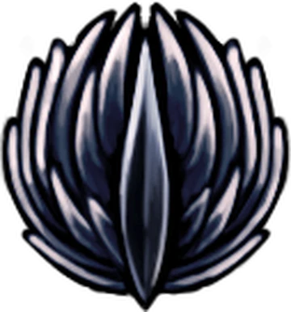
Te permite mover el aguijón casi tan rápido como yo. Casi. Nadie es más rápido que yo. - Fuerza Irrompible: Una rareza absoluta. Aumenta la potencia de tu aguijón para destrozar enemigos. Útil si no tienes mi fuerza natural.
- Piedra del chaman:
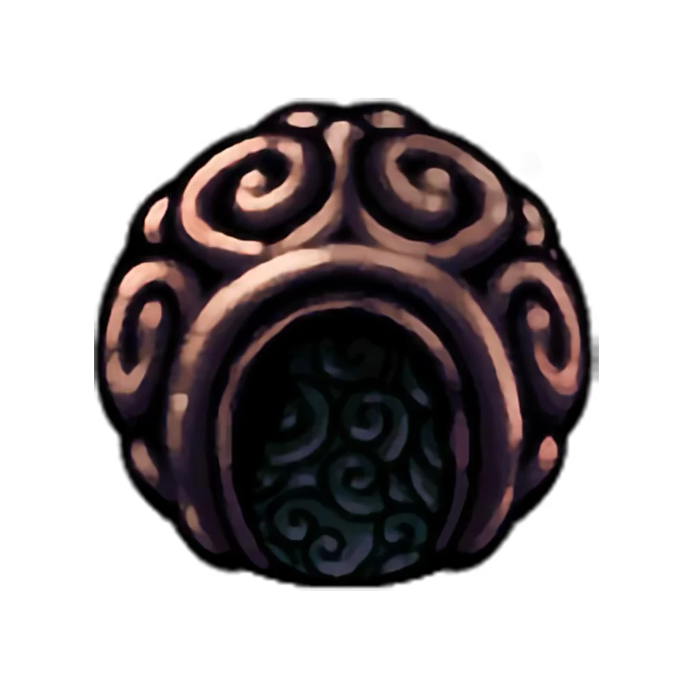
Se la arrebaté a un gigantesco chamán brujo invocador destructor tras humillarlo en combate. Potencia la fuerza de los hechizos. - Brújula Caprichosa:
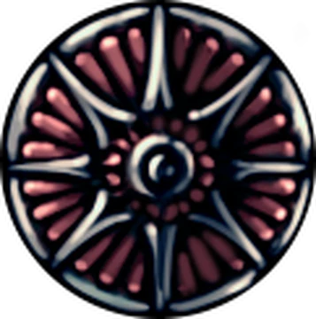
Esta la creé yo mismo, con mis propias manos, tras derrotar a una poderosa cartógrafa en una batalla a muerte. Sirve para guiarte en el mapa y que no te pierdas como el zopenco que eres.
Consejo numero 5: La flexibilidad táctica de una mente brillante
▼No te quedes estancado usando siempre las mismas baratijas, sé un poco inteligente y cámbialas según te convenga.
Si vas a explorar, equípate cosas que recojan Geo Moneda de Hallownest por ti (porque seguro te da pereza agacharte) o que te hagan correr más rápido. Y si vas a pelear —donde seguramente morirás y tendré que ir a rescatarte—, busca algo que aumente el daño de tus golpes o hechizos.
Consejo numero 6: Las sinergias secretas
▼Tras experimentar con estos misteriosos objetos, mi brillante intelecto concluyó que hay combinaciones que son espléndidas juntas, como Corte rapido y Fuerza Irrompible.
Pero hay sinergias ocultas que sólo un genio como yo podría aprovechar al máximo: si juntas el
Tremanido
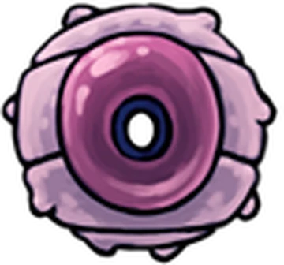
con el
Blasón del Defensor.
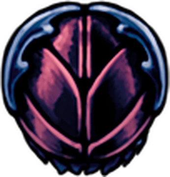
, tu hechizo de
Espiritu vengativo
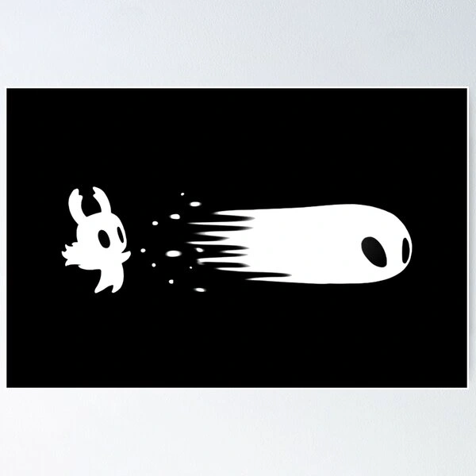
disparará tremanidos mejorados y pestilentes. ¡Una genialidad digna de mí!
Consejo numero 7: Rescata tu gran fracaso
▼Cuando mueras (porque tú sí mueres, a diferencia de mí), tu vasija se romperá y dejarás una sombra andrajosa en el lugar de tu fracaso, despertando tú en el último banco donde descansaste. Ve de inmediato a recuperarla. Si vuelves a morir antes de golpear a tu sombra, perderás todo tu Geo Moneda de Hallownest . Y créeme, no querrás ser pobre además de debilucho.
Consejo numero 8: El saqueo de los secretos ocultos
▼Debes mantener tus ojos bien abiertos ante cada pared del reino. Muchas de ellas ocultan secretos y tesoros que esperan ser reclamados por alguien con mi grandeza. Si ves una pared con grietas, golpéala repetidamente con tu aguijón hasta destruirla. Detrás siempre hay salas secretas que yo ya he saqueado, o que dejé para los mendigos.
Consejo numero 9: El arte de escuchar
▼Un gran guerrero como yo no sólo usa la vista, también escucha con cautela. Tienes que estar atento a los ruidos de los enemigos y a los suelos falsos.
Si caminas sobre un suelo destruible, sonará diferente. En ese momento, usa mi técnica modificada, el
Salto desolador
, para romperlo con estilo y descender a una nueva sala secreta.
Postales de Hallownest
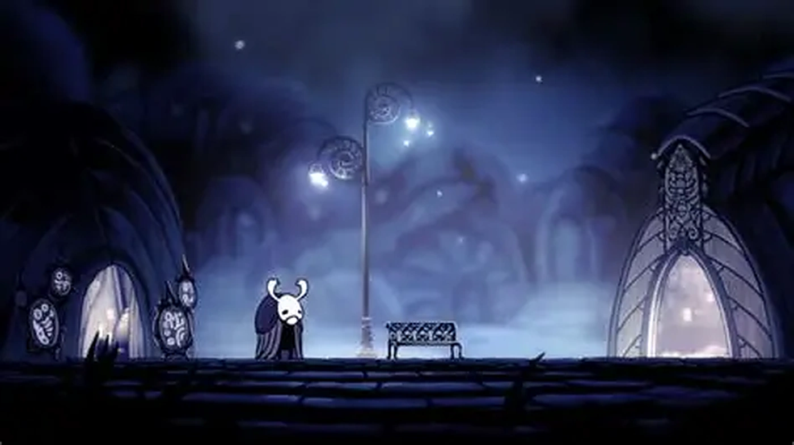
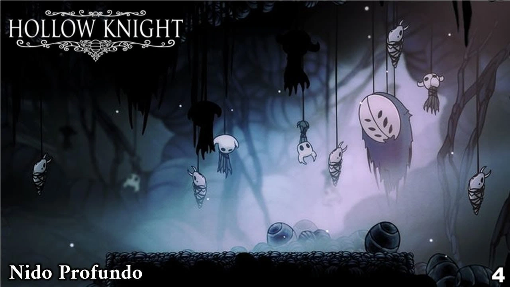
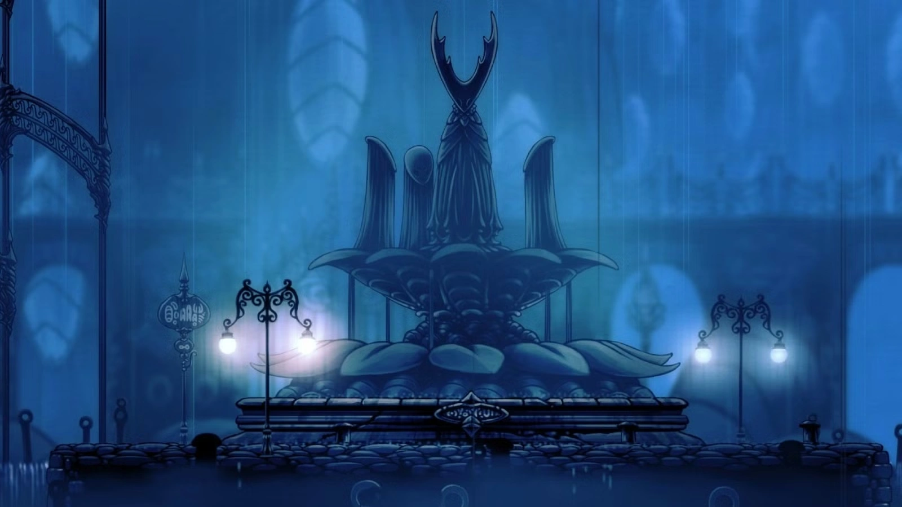
Consejo numero 10: La retirada estratégica para seres inferiores
▼Si estás a punto de romperte y te quedan pocas máscaras, prioriza huir como el cobarde que eres y busca un banco para curarte. Esto evitará que mueras constantemente y que tenga que ver tu patética sombra en lugares peligrosos. No es algo que un Caballero de Gran Renombre como yo haría jamás, pero para debiluchos como tú, es una excelente opción.
Consejo numero 11: Administra bien tu alma
▼El Alma es esa sustancia que extraes al golpear enemigos y sirve para curarte o lanzar hechizos.
No la desperdicies de forma estúpida. Si te están atacando ferozmente, ¡no te cures en medio del golpe, pedazo de alcornoque! Espera a que el enemigo falle, cúrate en su momento de debilidad y luego vuelve a la carga con todo lo que tengas.
Consejo numero 12: Domina a moverte por el aire
▼Esos monstruos ruidosos y torpes solo saben atacar hacia los lados. Cuando yo salto sobre ellos, uso mi gracia divina para golpearlos en la cabeza desde arriba mientras quedo fuera de su alcance.
Si vuelan, ataca rápido hacia los costados; mi velocidad lateral es inigualable. Aunque claro, para mí es un juego de niños, dudo que tus torpes extremidades logren imitar mi perfecta aerodinámica.
Consejo numero 13: No uses el dash sin motivo
▼¡El dash es para moverse con estilo, no para entrar en pánico! Si lo usas a ciegas en batalla, terminarás ensartado en espinas o chocando contra un bicho asqueroso. Yo solo me impulso cuando mi mente brillante calcula el aterrizaje perfecto. Piensa antes de moverte, si es que tienes con qué pensar.
Consejo numero 14: El Geo es para los que saben gastarlo
▼¿Llevar los bolsillos llenos? ¡Qué ridiculez! Si mueres por tu propia torpeza, esa patética sombra tuya se quedará con todo. Yo, por supuesto, no muero, pero tú deberías gastarlo inmediatamente. Dáselo a
Iselda
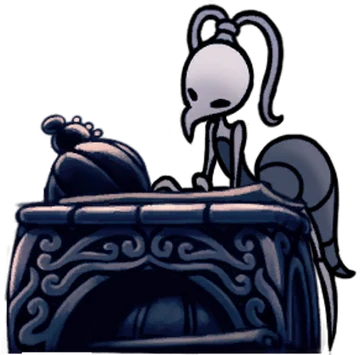
, a la
gorda Salubra
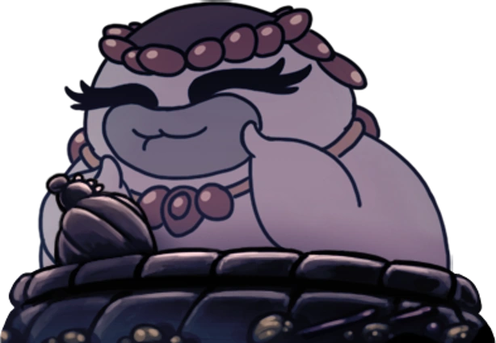
o al
Forjaguijones
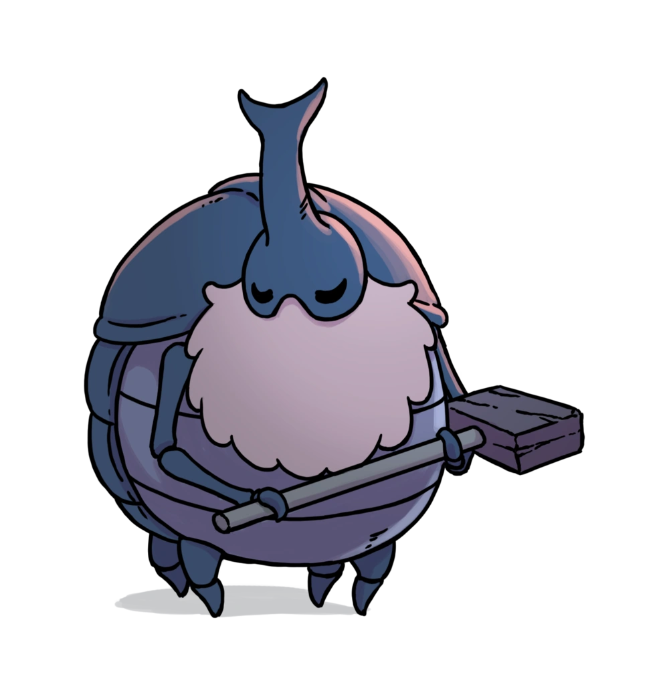
.¿Milibelle? Esa banquera me mira con admiración, puedes dejarle tus monedas si te da miedo cargarlas.
Consejo numero 15: No camines en círculos, admira el paisaje
▼Es normal que te pierdas, tu sentido de la orientación debe ser lamentable. Si una puerta está cerrada, no llores. Vete a otra parte, hazte un poco más fuerte (aunque jamás tanto como yo) y regresa cuando tengas las herramientas adecuadas. La paciencia es una virtud de los grandes guerreros.
Consejo numero 16: Clava tus ojos en el enemigo
▼¿Qué pretendes? ¿Que vaya a rescatarte otra vez de las garras de alguna bestia? ¡No pienso perder mi valioso tiempo! Mira fijamente a tus rivales, estudia sus tontos patrones de ataque. Una vez que tu diminuto cerebro memorice lo que hacen, esquivarlos será tan fácil como lo es para mí.
Consejo numero 17: Un aguijón digno de un caballero
▼Un arma poderosa intimida al enemigo antes de que empiece el combate. Mi aguijón, tallado por mí mismo en caparazon de madera, es perfecto. Pero como tú usas un trozo de metal mundano, busca esos minerales raros y haz que el Forjaguijones te lo mejore. No querrás que tus golpes parezcan cosquillas.
Consejo numero 18: Refuerza tu frágil caparazón
▼Los seres débiles como tú necesitan máscaras y vasijas. Junta cuatro fragmentos de máscara para aguantar un golpe más, y tres de vasija para almacenar esa sustancia brillante que usan para sanar sus patéticas heridas. Yo no los necesito, mi sola presencia ahuyenta el peligro, pero a ti te vendrán de perlas.
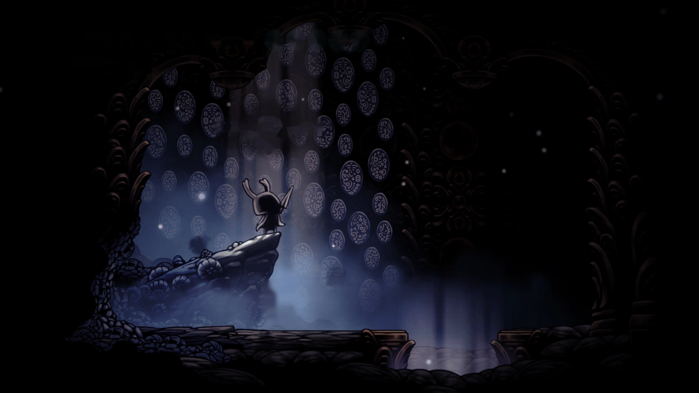
Consejo numero 19: Ve a llorarle a
Jiji
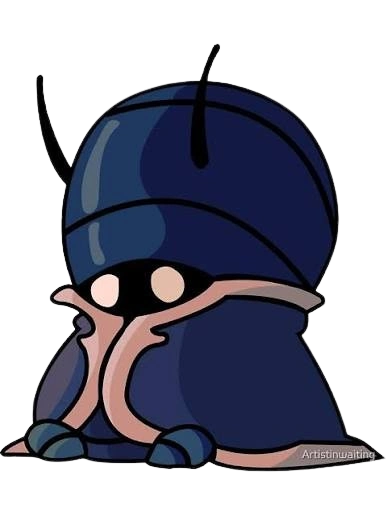
▼
¿Has muerto y dejado tu sombra en un sitio lleno de monstruos horribles? Qué predecible. Hay una vieja extraña metida en una cueva en Bocasucia; se llama Jiji . Si le llevas un huevo podrido (un manjar desagradable, si me lo preguntas), traerá tu sombra arrastrándose ante ti. Una solución ridícula para gente descuidada.
Consejo numero 20: Aprende de los maestros
▼Esos tres "maestros del aguijón" ocultos por el mundo se creen la gran cosa. Sus técnicas son pasables. Ve, búscalos y aprende sus Artes del Aguijón. Te darán golpes más fuertes, vitales para alguien que carece de mi fuerza bruta natural.
Consejo numero 21: Un baño digno de la realeza
▼Si encuentras esas piscinas de agua caliente y vaporosa, entra en ellas. No solo limpian la suciedad del viaje, sino que restauran tus fuerzas y llenan tu alma. A menudo me relajo en ellas mientras compongo poemas sobre mi propia gloria.
Consejo numero 22: No seas codicioso con los amuletos
▼Si intentas meter a la fuerza más amuletos de los que tus muescas permiten, terminarás sobrecargado. ¿El resultado? Recibirás el doble de daño. Es un estado apto solo para alguien con mi resistencia legendaria; un alfeñique como tú se rompería en mil pedazos al primer rasguño. ¡No te pases de listo!
Consejo numero 23: Revisa las tiendas de los plebeyos
▼El viejo
Sly
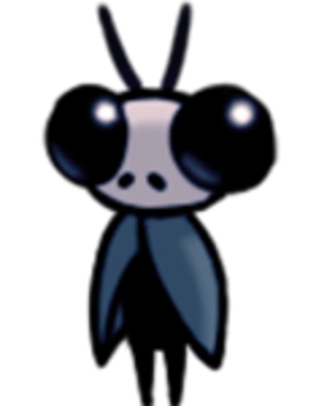
y los demás comerciantes consiguen cosas nuevas cuando les llevas ciertos objetos, como llaves antiguas. Vuelve a visitarlos de vez en cuando. Aunque para mí solo venden baratijas, para un vagabundo como tú pueden tener algo útil.
Consejo numero 24: Vende la basura del pasado
▼¿Has encontrado diarios viejos, sellos de Hallownest o ídolos raros? Para mí son basura, pero hay un viejo testarudo en la Ciudad de las Lágrimas, Lemm, que pierde la cabeza por esas antigüedades. Llevaselas y te dará una buena cantidad de Geo. ¡Dinero fácil!
Consejo numero 25: Rescata a los gusanos maricas
▼¿Escuchas esos lamentos agudos por las paredes? Son unas larvas indefensas metidas en frascos. Rompe el vidrio y libéralas. Su padre, un bicho enorme y regordete en los Cruces, te soltará recompensas cada vez que salves a sus hijos. Alguien tiene que hacer el trabajo caritativo, y claramente yo estoy muy ocupado siendo magnífico.
Consejo numero 26: Medita en el banco antes de la gloria
▼Antes de enfrentarte a un monstruo mayor, siéntate en un banco y acomoda tus amuletos. Piensa en una estrategia que combine bien. Yo no necesito prepararme, pues mi victoria está escrita en las estrellas, pero tú necesitas toda la ayuda posible.
Consejo numero 27: Regresa a tus viejos pasos
▼¿Viste un camino alto al que no podías llegar? No lo olvides. Cuando consigas nuevas habilidades gracias a mis enseñanzas, regresa a esas zonas del mapa. Encontrarás secretos, materiales y tesoros que antes se burlaban de tu incapacidad de saltar alto. ¡Explora como un verdadero caballero!
¿Ya terminaste con Zote?
Ahora cruza a Pharloom
Shakra, cartógrafa y bastante más humilde, tiene otros 30 consejos esperándote.
Ir con Shakra → Consejo al azar ✦